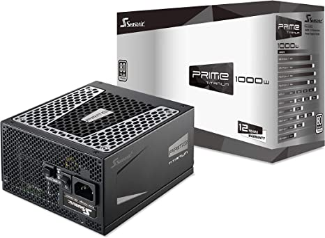

SeasonicPrime Power Supply

Seasonic has included a PSU tester in the box that will let consumers perform a quick and easy jump start on the power supply. Each PRIME Ultra Series power supply will also ship with a SATA 3.3 adapter to support the “Power Disable” (PWDIS) feature of the newer, high-capacity hard drives. The inline capacitors on the cables were removed, which takes away the bulkiness inside the system. To maximize flexibility, the 180-degree SATA connectors ensuring more flexibility and easier installation.
The PRIME Titanium Series achieves the highest level of 80 PLUS® Titanium certification on the market with its 94 % efficiency at 50 % system load.
Seasonic's latest design keeps the output voltage within a very tight range, achieving under 0.5 % load regulation. This impressive electrical performance and stability makes this power supply an ideal choice for high-performance systems.
Read More
Return